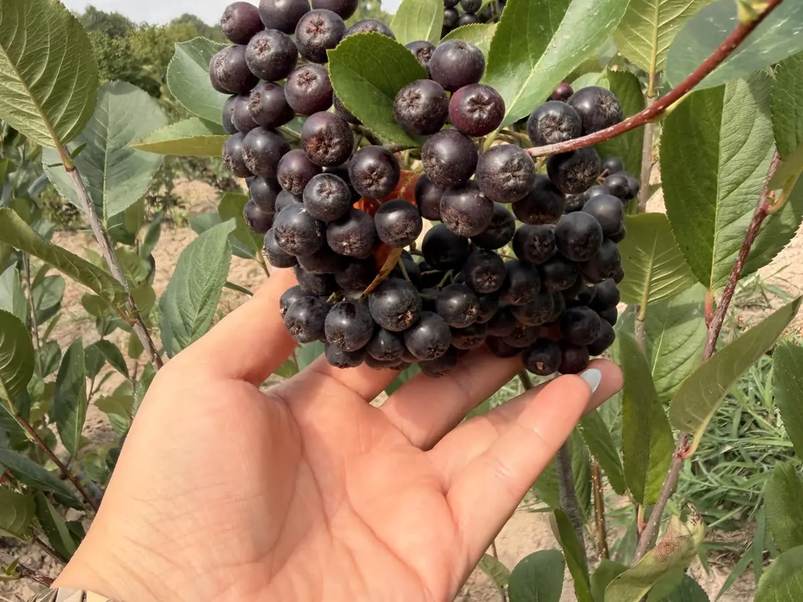
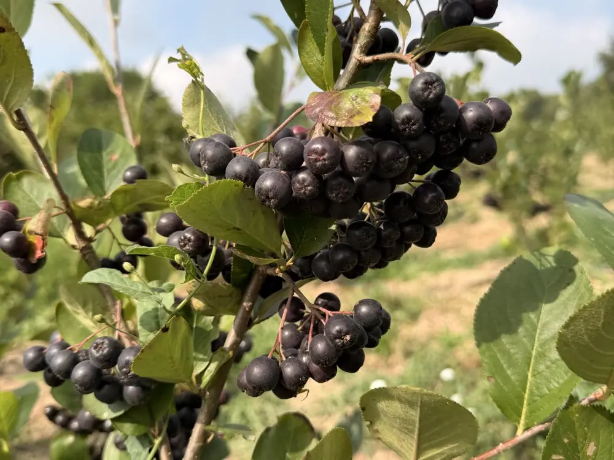
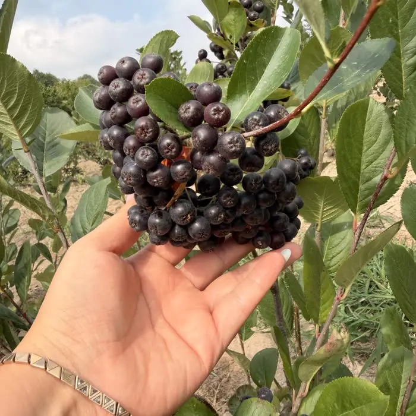
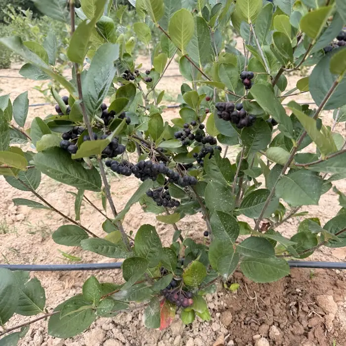
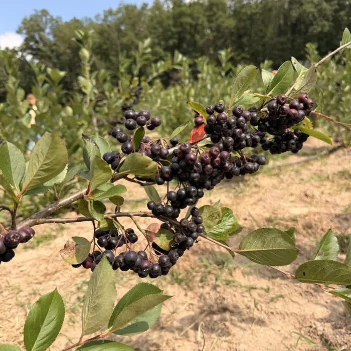
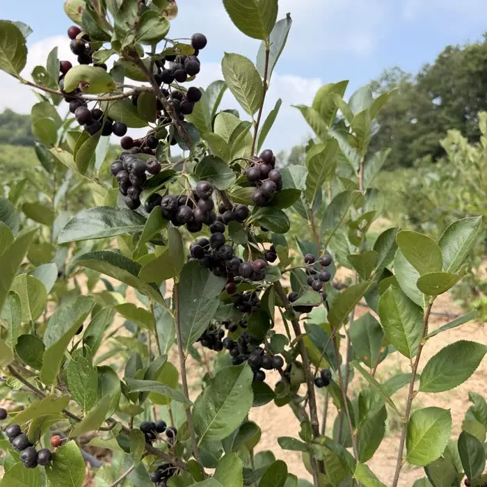
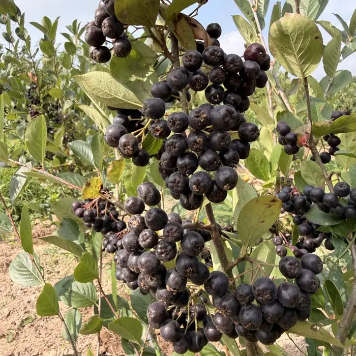
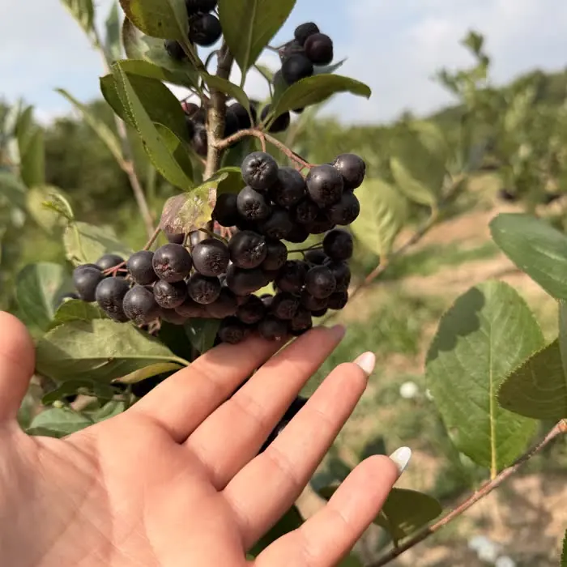

whatsapp: satırını doldurun.

Kendi bahçemizden · Elle toplanır
Aronia melanocarpa
Bahçemizde ilaçsız yetişen taze aronya. İstediğiniz pakete dokunun, WhatsApp'tan doğrudan bize yazın.
Ön sipariş alıyoruz
Ürün

Kendi bahçemizde yetişen aronya, taze meyve olarak satılır. Kurutulmamış, işlenmemiş, karışımsız.
Bahçemiz

Meyveleri elle, salkım salkım topluyoruz. Aklınıza takılan her şeyi doğrudan bize sorabilirsiniz — telefonun ucunda üretici var.
Paketler
Fiyatlara kargo dahil. Pakete dokunun, hazır sipariş mesajı açılsın.
Bahçemizden
Fotoğrafların hepsi kendi sıralarımızdan, bu sezon çekildi.





Neden aronya?
Çoğu meyvede renk kabukta durur. Aronyayı ikiye böldüğünüzde içi de mor — suyu elinize, tahtaya, beyaz tişörte bulaşır. Bu koyuluğu yapan antosiyanin, bitkinin kendini güneşten, soğuktan ve böcekten koruyan pigmenti. Aronya bunu, markette bulacağınız hiçbir meyvenin yaklaşamadığı yoğunlukta üretiyor.
Kaynak: Wu ve ark. (2006), USDA — yüzden fazla gıdanın aynı yöntemle (HPLC) ölçüldüğü çalışma, bu yüzden meyveler birebir karşılaştırılabiliyor. Türkiye'de markette bulunan meyveler seçildi. Değerler çeşide, olgunluğa ve toprağa göre değişir.
Aronya bir gıdadır, ilaç değildir. Bu sayılar meyvenin içeriğini anlatır; insan çalışmaları sürüyor ve sayfa hiçbir sağlık iddiası taşımaz.
Ağzı kurutan o his tanenden gelir — pigmentle aynı savunma sisteminin parçası. Yani aronyayı değerli yapan şeyle burukluğu yapan şey aynı. İlk kez deneyecekseniz tek başına değil; yoğurt, bal veya muzla tadın. Dondurucuda beklettikçe burukluğu yumuşar.
Nasıl tüketilir?
Bir avuç aronyayı yoğurda veya yulafa ekleyin, bal serpin.
Muz ve sütle blenderdan geçirin; muz burukluğu dengeler.
Yıkayıp poşetleyin, kış boyu elinizin altında olsun.
Kek, reçel ve granola tariflerine renk ve tat verir.
Sipariş & teslimat
Sık sorulanlar
Ön sipariş için tek mesaj yeterli.
WhatsApp'tan yazınTarayıcınız yeni sekme açmayı engelledi. Bize doğrudan bu numaradan yazabilirsiniz:
+90 531 948 90 31